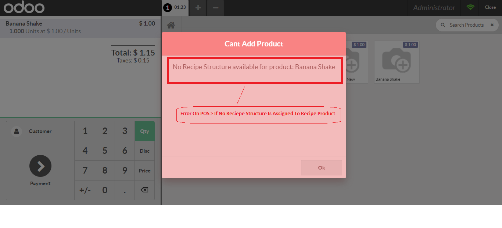

What could be more important to a Food and beverage Company / Restaurant than their Recipes? The issues of traceability, sustainability, profitability and process efficiency are Important Factors For such type of Organization . Recipe of Your Product play an important role in shaping your brand identity and driving sales.
For this Purpose We Have Developed this Recipe Management System.
Benefit of This Include :
Following Are Some Screenshots of Our Recipe Management System
Recipee Manager Role
Recipee Modules Menus and Functionality
Creation Of Recipe Product and one time Configuration
Update Current Recipe of Product
Recipee Lines Import and create option With Grouping Functionality For Analysis
Recipe Lines of Recipe Product Imported Through Excel Format
Recipee lines of the Recipe Product Added through import
ERROR ON POS If No Quantity for Consumtion is Available Against Recipe Product
Error if No Recipe Consumtion Structure Line is Attached to Recipe Product
Recipe Product Quantity Before Sale on POS
Consumtion Automatically Recorded in Session
Stock Position After Entering One POS Order For Apple Shake, quantity on hand is reduced For Stock as per recipe.
Consumtion Record and Tracking against each POS Order And Session
Profitability Margin Report On Consumtion based on Material Consumption
Report Menu POS Margin Reprot
POS Gross Profit Excel Report , Showing Recipee Consumtion and Profit
Incase of any question regarding this module feel free to email us on info@taxdotcom.org or raise a ticket on support.